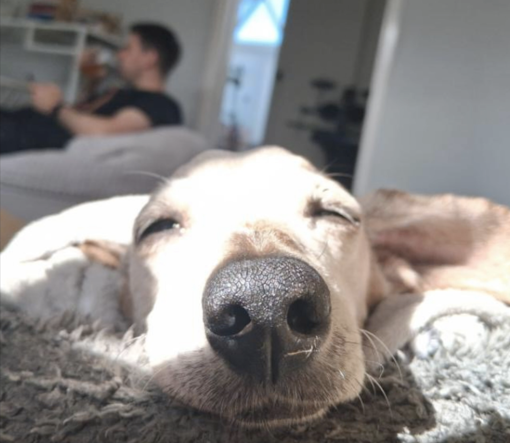
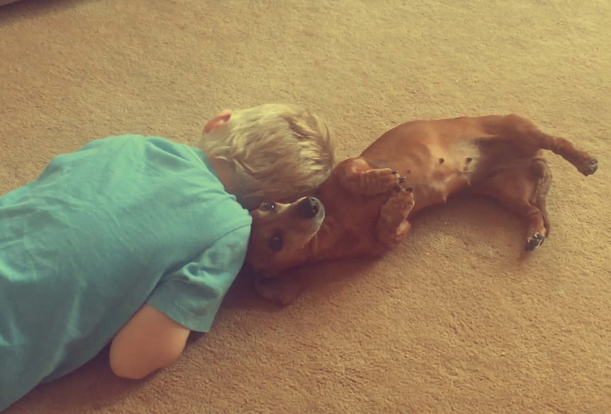
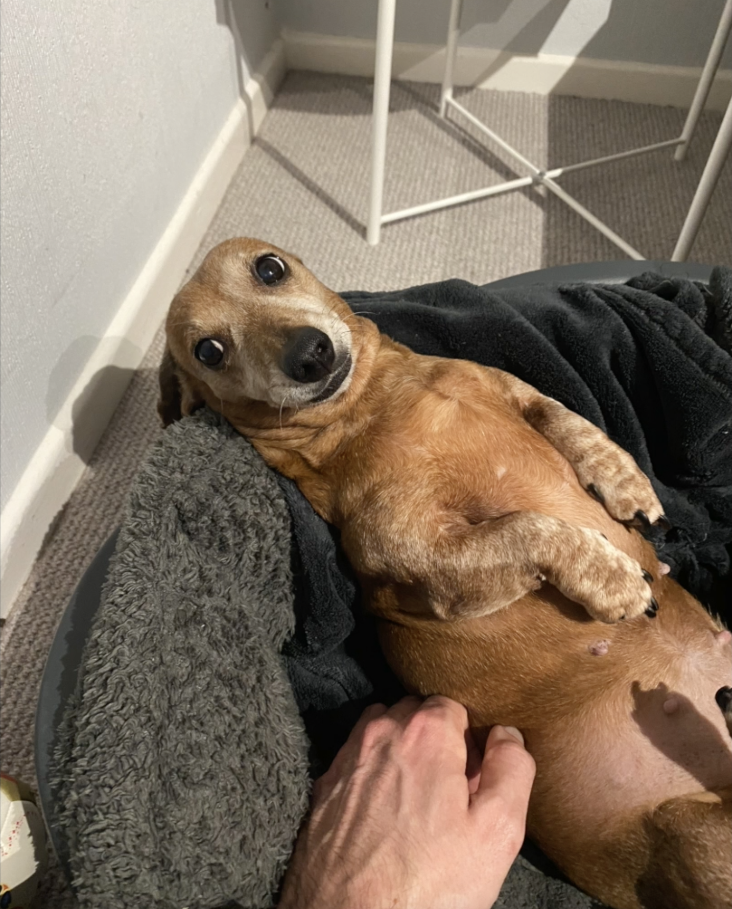
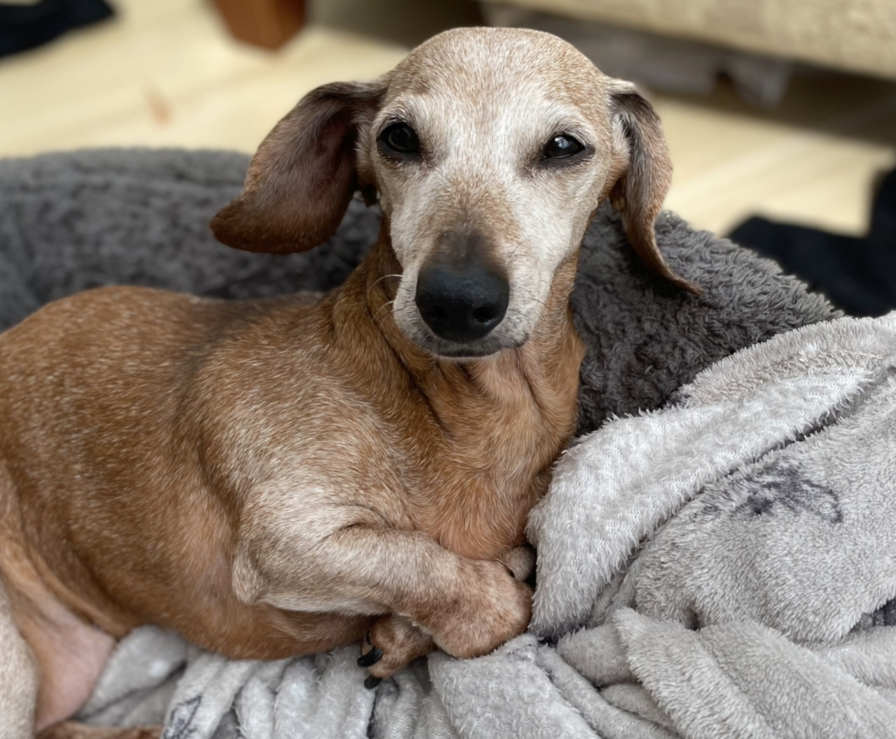

About Connie
Connie is a real dachshund who helped me teach graduate students of behaviour analysis for around fifteen years. Her favourite things were family, barking and cheese. This site is both inspired by Connie and a small tribute to her.
   